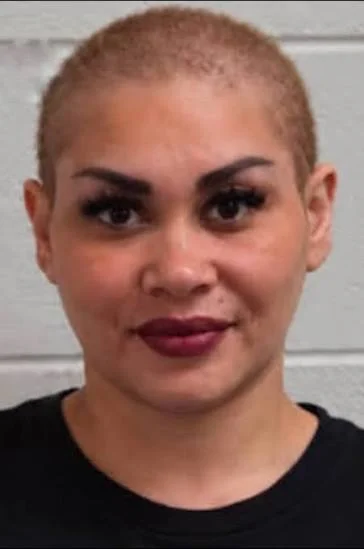
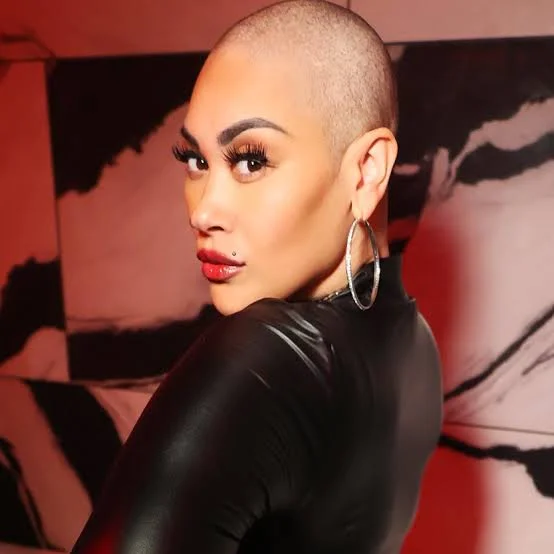

Keke Wyatt Addresses Conflicting Reports Following Georgia Arrest
Music News
Published: Friday, September 25, 2026

R&B vocalist Keke Wyatt is addressing reports surrounding her recent arrest in Georgia as conflicting information continues to circulate about the charges connected to the case.
Wyatt was taken into custody in Henry County on September 20 and was released two days later after posting a $1,050 bond. Early reports about the arrest described several allegations, including simple assault, terroristic threats and a child-cruelty-related offense.
Wyatt’s representatives are now challenging that description.
According to a statement released on the singer’s behalf, the court paperwork they reviewed lists simple assault as the charge. Her representatives disputed reports that Wyatt was formally charged with aggravated assault, terroristic threats and acts, or cruelty to children.
The disagreement highlights an important distinction between information appearing in an initial booking record and what may ultimately be reflected in formal court documents.
At this point, publicly available reports have not provided a detailed account of what allegedly happened before Wyatt’s arrest. Her representatives have also declined to speculate about the circumstances and instead emphasized that the case should be allowed to proceed through the legal system.
Representatives Ask for Accurate Reporting
Wyatt’s team has pushed back against what they consider an inaccurate portrayal of the case, particularly reports involving allegations concerning a child.
Their statement does not attempt to provide a full explanation of the incident. Instead, it maintains that coverage should be based on the charges contained in the court documentation.
The conflicting accounts mean that additional court records or official information may be necessary before the exact status of the case can be fully established.
Wyatt’s Career

Wyatt has been a recognizable name in R&B for more than two decades.
She gained widespread attention in the early 2000s through her collaborations with singer Avant. Their work together included the songs “My First Love” and “Nothing in This World.”
Wyatt’s debut album, Soul Sista, became a commercial success and reached No. 5 on Billboard’s R&B and hip-hop albums chart. She continued releasing music throughout the following years, with projects including Who Knew?, Unbelievable! and Rated Love.
Her career also expanded into television. Wyatt appeared on TV One’s R&B Divas: Atlanta throughout the reality show’s three-season run and later received her own series, Keke Wyatt’s World, which focused on her family life and career.
A Previous Legal Matter
The current case has also brought renewed attention to a separate incident involving Wyatt from 2000.
Wyatt was previously indicted for second-degree assault after stabbing her then-husband, Rahmat Morton. Wyatt said she acted in self-defense, and the case was later dismissed.
Years afterward, she discussed the incident publicly and described the relationship as abusive.
That case is separate from the allegations surrounding her September 2026 arrest.
The Case Remains Unclear
For now, there are two different descriptions of Wyatt’s legal situation circulating publicly.
Initial booking information cited by news organizations has included multiple allegations, while Wyatt’s representatives maintain that the relevant court documentation identifies only a simple-assault charge.
The available information does not establish the underlying circumstances of the September 20 incident, and no allegation should be treated as a proven fact simply because it appeared in an arrest or booking report.
Wyatt’s representatives have indicated that she intends to continue with her professional commitments while the legal matter moves through the court system.
More official court information could ultimately clarify which charges are formally pending and provide additional details about the case.